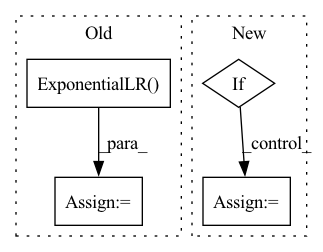

Pattern ID :26583

Before Change
elif opt.scheduler == "step":
scheduler = optim.lr_scheduler.StepLR(optimizer, step_size=opt.epochs // 3, gamma=0.1)
elif opt.scheduler == "exp":
scheduler = optim.lr_scheduler.ExponentialLR(optimizer, gamma=0.99)
elif opt.scheduler == "cyclic":
scheduler = optim.lr_scheduler.CyclicLR(optimizer, base_lr=opt.lr, max_lr=0.1 * opt.lr,
step_size_up=opt.epochs // 10,
step_size_down=opt.epochs // 10)
After Change
schedulers = EasyDict(schedulers)
def get_scheduler(opt, optimizer):
if opt.scheduler is None:
opt.scheduler = opt.model.lower()
if opt.scheduler == "cos":
scheduler = optim.lr_scheduler.CosineAnnealingLR(optimizer, T_max=opt.epochs, eta_min=opt.lr * 0.1)
In pattern: SUPERPATTERN
Frequency: 4
Non-data size: 4
Instances
Fragment ID: 79634062
Project Name: misads/detection_template
Commit Name: b582c5f3b01f6e089bb32fe40fe282388e875355
Time: 2020-12-12
Author: 523131316@qq.com
File Name: scheduler/__init__.py
M Class Name: AnonimousClass
N Class Name: AnonimousClass
M Method Name: get_scheduler(2)
N Method Name: get_scheduler(2)
M Parent Class:
N Parent Class:
M File Name: scheduler/__init__.py
N File Name: scheduler/__init__.py
M Start Line: 7
M End Line: 47
N Start Line: 22
N End Line: 38
'>
Before Change
def configure_optimizers(self):
lr = self.hparams.learning_rate
opt = torch.optim.Adam(self.parameters(),lr=lr, betas=(0.5, 0.9))
sched = torch.optim.lr_scheduler.ExponentialLR(optimizer = opt, gamma = self.args.lr_decay_rate)
return [opt], [sched]
def log_images(self, batch, **kwargs):
log = dict()
After Change
def configure_optimizers(self):
lr = self.hparams.learning_rate
opt = torch.optim.Adam(self.parameters(),lr=lr, betas=(0.5, 0.9))
if self.args.lr_decay:
sched = ReduceLROnPlateau(
opt,
mode="min",
factor=0.5,
'>
Fragment ID: 79634071
Project Name: tgisaturday/dalle-lightning
Commit Name: 2ecc02819f789cfd0678a253d595e4de76a3eea7
Time: 2021-07-20
Author: jamesk1228@gmail.com
File Name: pl_dalle/models/vqvae2.py
M Class Name: VQVAE2
N Class Name: VQVAE2
M Method Name: configure_optimizers(1)
N Method Name: configure_optimizers(1)
M Parent Class: pl.LightningModule
N Parent Class: pl.LightningModule
M File Name: pl_dalle/models/vqvae2.py
N File Name: pl_dalle/models/vqvae2.py
M Start Line: 139
M End Line: 140
N Start Line: 138
N End Line: 153
'>
Before Change
def configure_optimizers(self):
lr = self.hparams.learning_rate
opt = torch.optim.Adam(self.parameters(),lr=lr, betas=(0.5, 0.9))
sched = torch.optim.lr_scheduler.ExponentialLR(optimizer = opt, gamma = self.args.lr_decay_rate)
return [opt], [sched]
def get_last_layer(self):
return self.decoder.conv_out.weight
After Change
def configure_optimizers(self):
lr = self.hparams.learning_rate
opt = torch.optim.Adam(self.parameters(),lr=lr, betas=(0.5, 0.9))
if self.args.lr_decay:
sched = ReduceLROnPlateau(
opt,
mode="min",
factor=0.5,
'>
Fragment ID: 79634066
Project Name: tgisaturday/dalle-lightning
Commit Name: 2ecc02819f789cfd0678a253d595e4de76a3eea7
Time: 2021-07-20
Author: jamesk1228@gmail.com
File Name: pl_dalle/models/vqvae.py
M Class Name: VQVAE
N Class Name: VQVAE
M Method Name: configure_optimizers(1)
N Method Name: configure_optimizers(1)
M Parent Class: pl.LightningModule
N Parent Class: pl.LightningModule
M File Name: pl_dalle/models/vqvae.py
N File Name: pl_dalle/models/vqvae.py
M Start Line: 102
M End Line: 103
N Start Line: 101
N End Line: 116